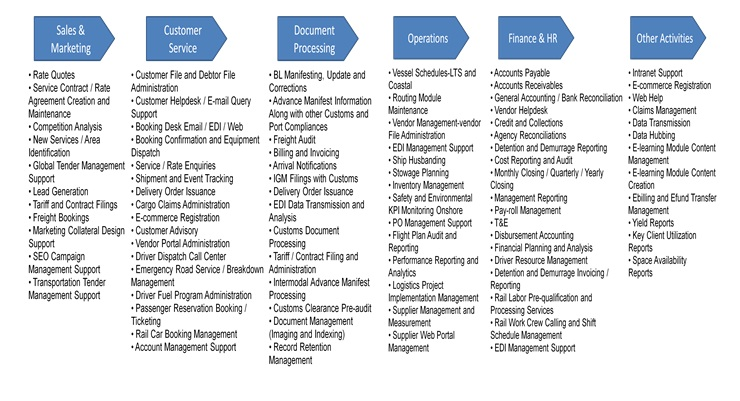

The shipping and logistics industry has experienced the advantages of adopting Business Process Outsourcing (BPO) as a strategy to improve efficiencies and reduce the cost of operations.
Economic volatility, rising fuel costs and fluctuating industry cycles are impacting the growth and profitability of shipping and logistics companies. As a result, leading players are increasingly turning to Business Process Outsourcing (BPO) as a strategy to improve the efficiency of business processes, while significantly reducing the cost of operations.
Shipping and logistics companies are characterized by heavy capital expenditure and high recurring costs such as rising fuel bills. With an uncertain economic environment and high costs, companies in this sector are looking to gain operational efficiency through customized solutions for sales, customer services and operations in order to optimize revenues and input costs, through outsourcing.
Our clients can benefit from our wide range of outsourcing services across rule-based and knowledge-based processes.Our strong team has proven competency to handle client requirements spanning from mid- to large-sized shipping and logistics companies.As an Organization driven by passion for quality , we integrate people, technologies and tools to deliver operational excellence, customized solutions, and actionable insights at a reduced cost.
The Leeway shipping and logistics vertical is managed and supported by highly qualified industry professionals with deep domain knowledge. Its service offerings are well-defined to include a wide range of BPO solutions for the shipping and logistics industry that can be further customized to suit the specific needs of clients. The LEEWAY Shipping & Logistics vertical leadership team has decades of cumulative experience across areas of global shared service centers, liner shipping, ship management and allied competencies. This is further complemented by horizontal competencies in finance and accounting, research and analytics, and global contact centers.
LEEWAY's domain-specific solutions are as follows:
The main focus here is on the core activity of transportation across land, air, sea and rail modes. Further sub-segments are shipping lines, air express companies, road operators, rail operators, ship owners.
LEEWAY Solutions for Freight Carriers
Economic volatility, rising fuel costs and fluctuating industry cycles are impacting the growth and profitability of shipping and logistics companies. As a result, leading players are increasingly turning to Business Process Outsourcing (BPO) as a strategy to improve the efficiency of business processes, while significantly reducing the cost of operations.
LEEWAY is a preferred solutions provider for BPO and consulting services to companies across Ocean Shipping, Air (Express), Road (Trucking), Rail and Contract Logistics. Its extensive experience of delivering outsourcing solutions to industry leaders, deep domain expertise and operational excellence enable companies in this sector to focus on their core business, while LEEWAY takes care of their business processes.
LEEWAY's service offerings are customized for companies in the following sectors:
Logistics Services Outsourcing - Ocean Shipping Industry
The shipping and logistics industry bears the hallmarks of a cyclical industry viz, periodically alternating demand-supply patterns causing severe demand-supply mismatches and the consequent gyrations in the top line and bottom line performance. The deeply fragmented nature of this industry, at a global level, further exacerbates the situation and acts as a natural barrier to calibrate the supply side dynamics to match the existing demand. This situation is now slowly changing, and consolidation is emerging as a survival strategy in the container shipping industry. Companies are now looking at leveraging the benefits of partnering with an outsourcing provider.
The LEEWAY shipping and logistics vertical offers industry focused service offerings and solutions which help companies in this crucial sector of the economy leverage the strategic advantages of outsourcing and become more competitive. The LEEWAY shipping and logistics vertical has domain and outsourcing experts who identify industry pain-points and design appropriate outsourcing services and solutions in a holistic manner.
Logistics Services Outsourcing - Air (Express) Industry
The air express industry has been affected by the recent global economic downturn and rising fuel costs. Apart from facing pressures from environmental groups and statutory bodies to reduce air pollution due to its impact on global warming, these companies also have to cope with the volume reduction as a result of low cost transport options like road and ocean shipping. To counter these trends, companies in the air express sector have tied up with outsourcing companies to reduce their operating costs and improve service delivery capabilities.
LEEWAY has the right credentials and experience with the right resources with rich domain knowledge to perform business processes that span across the entire business value chain in the air express sector:
Logistics Services Outsourcing - Road (Trucking) Industry
The trucking industry is characterized by low entry barriers and a commoditized nature of services, and this has led to a fragmented and competitive market. The rising cost of motor fuel has made a significant dent in the operating margins of companies in the trucking sector. Progressive players in this sector are eager to look for opportunities to move up the value chain and create customer stickiness by improving their service delivery. At the same time, they are looking to aggressively cut servicing costs since this industry is known to operate on slender operating margins. Trucking companies are working with outsourcing partners to meet these goals.
LEEWAY has gained deep domain knowledge of this sector and provides a bouquet of service offerings designed to help companies in the trucking sector achieve their financial and service delivery objectives.
Logistics Services Outsourcing - Rail Industry
Companies in the freight railroad sector enjoy competitive advantage for being cheaper and more fuel-efficient than truck and ship transport. However, there exists scope for freight rail operators to further improve their operating margins. Freight railroad companies also need to recoup the significant capital investments they have made over the years to improve service reliability and generate an effective return on investment.
Logistics Service Providers:
These complement and integrate the Freight Carriers with end-to-end client solutions. A sub-segment here is the logistics and supply chain solution companies.
LEEWAY Solutions for Logistic Service Providers
The supply chain solution side of the industry works as an integrator to the end client. Non-vessel-owning common carriers (NVOCCS), global forwarding companies, third-party logistics players and fourth-party logistics players are now seeking competitive advantages in the marketplace through business process outsourcing.
The key advantages of the LEEWAY outsourced model are:
- It enables smooth access to newer markets by product development and global presence
- It improves margins by providing variable transactional costs, service delivery excellence through a 24/7 contact center, risk mitigation by reducing entry costs to newer markets and enabling better process control
- LEEWAY has domain expertise to customize warehousing, transportation and other logistic solutions on demand. LEEWAY helps create virtual, scalable layers which can act as an engine for your business growth.
LEEWAY offers a range of customized business process outsourcing services for the Freight & Logistics sector to help them meet their strategic objectives of improved service delivery and enhanced operating margins.
